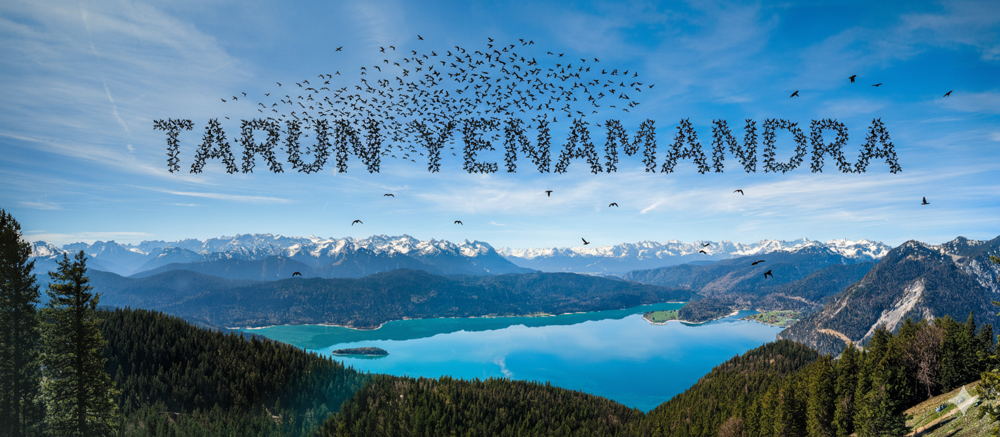

|  | |
|
PhD researcher in computer vision focusing on neural 3D/4D scene representations and generative modeling, with research experience at Meta Reality Labs. |

|
ResearchMy interests are 4D generative models, model-based learning, geometric deep learning, and 3D/4D reconstruction. |


|
FIRe: Fast Inverse Rendering using Directional and Signed Distance Functions
Tarun Yenamandra, Ayush Tewari, Nan Yang, Florian Bernard, Christian Theobalt, Daniel Cremers WACV, 2024 Directional and signed-distance function based renderer that enables fast inverse rendering. |

|
SupeRVol: Super-Resolution Shape and Reflectance Estimation in Inverse Volume Rendering
Mounir Brahimi, Bastian Haefner, Tarun Yenamandra, Bastian Goldluecke, Daniel Cremers WACV, 2024 Super-resolution approach for shape and reflectance estimation in inverse volume rendering. |


|
i3DMM: Deep Implicit 3D Morphable Model of Human Heads
Tarun Yenamandra, Ayush Tewari, Florian Bernard, Hans-Peter Seidel, Mohamed Elgharib, Daniel Cremers, Christian Theobalt CVPR, 2021 (Oral) Template-free implicit model for full human heads including hairstyle using signed distance fields. |

|
Joint Deep Multi-Graph Matching and 3D Geometry Learning from Inhomogeneous 2D Image Collections
Zhenzhang Ye, Tarun Yenamandra, Florian Bernard, Daniel Cremers AAAI, 2021 Joint learning of multi-graph matching and 3D geometry from inhomogeneous 2D image collections. |

|
Convex Optimisation for Inverse Kinematics
Tarun Yenamandra, Florian Bernard, Jiayi Wang, Franziska Mueller, Christian Theobalt 3DV, 2019 (Oral) Modeling inverse kinematics as a semidefinite program to relax non-convex terms and remove initialization dependence. |